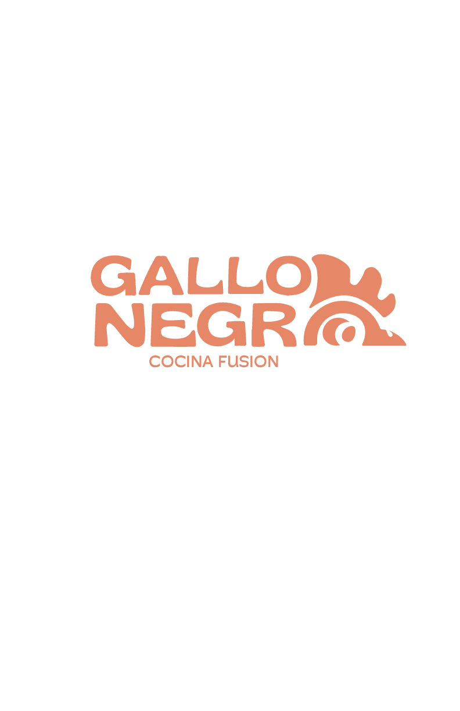

Logo Design
This collection presents a range of logo designs developed for diverse brands, each crafted to communicate identity, values, and purpose with clarity and impact.
The selection includes both conceptual explorations and finalized brand marks, showcasing versatility across different styles, industries, and design approaches.

